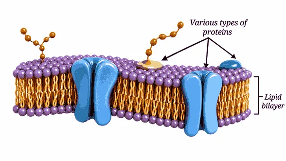
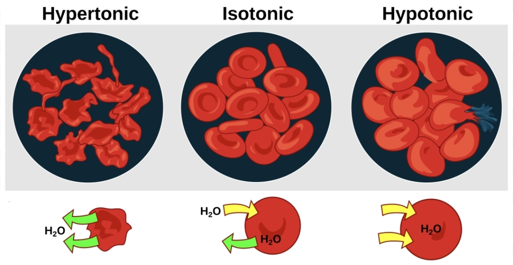
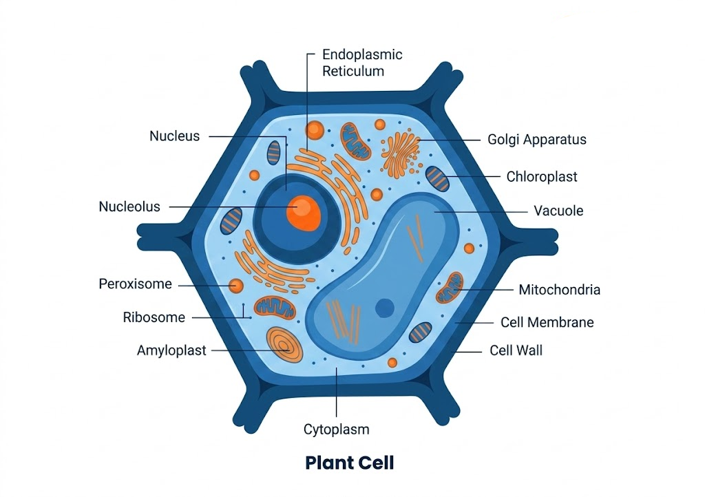
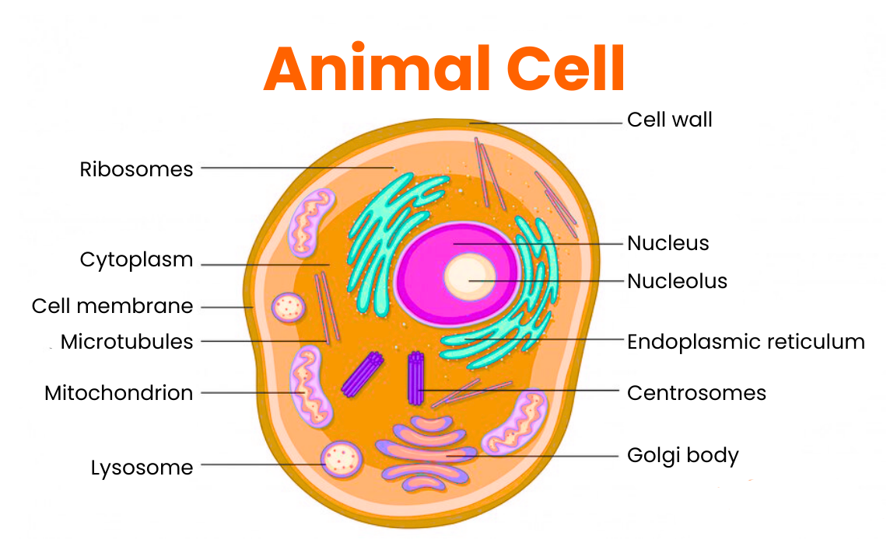

📑 विषय-सूची
1. 🔬 कोशिका का परिचय
कोशिका सभी जीवों की संरचनात्मक एवं क्रियात्मक इकाई है। अर्थात जीवों के शरीर की रचना तथा उनकी अधिकांश जीवन-क्रियाएँ कोशिकाओं पर आधारित होती हैं।
🔗 कोशिका से जीव तक संगठन
उदाहरण के लिए मानव शरीर में विभिन्न अंग मिलकर श्वसन तंत्र जैसे अंग तंत्र का निर्माण करते हैं।
🌡️ गर्म जलस्रोत और जीवाणु
कुछ जीवाणु गर्म जलस्रोतों में भी पाए जाते हैं। ऐसे जीवों को तापप्रिय (Thermophilic) जीव कहा जाता है। गर्म जलस्रोतों के आसपास कैल्शियम कार्बोनेट तेजी से जम सकता है।
👨🔬 रॉबर्ट हुक
2. 🔍 सूक्ष्मदर्शी एवं मापन
विद्यालयों में सामान्यतः वस्तुओं और कोशिकाओं को देखने के लिए प्रकाश सूक्ष्मदर्शी (Light Microscope) का प्रयोग किया जाता है।
सूक्ष्मदर्शी की प्रमुख विशेषताएँ
- Magnification: वस्तु को कितना बड़ा दिखाया जा सकता है।
- Resolution: दो बहुत पास-पास स्थित बिंदुओं को अलग-अलग पहचानने की क्षमता।
- Contrast: वस्तु और पृष्ठभूमि के बीच अंतर स्पष्ट करने की क्षमता।
3. 🧫 प्लाज्मा झिल्ली
प्लाज्मा झिल्ली कोशिका की बाहरी सीमा होती है। यह कोशिका के अंदर और बाहर पदार्थों के आवागमन को नियंत्रित करती है।
यह कुछ पदार्थों को कोशिका के अंदर आने या बाहर जाने देती है, जबकि कुछ पदार्थों को रोकती है।
🧪 संरचना
- मुख्यतः लिपिड और प्रोटीन से बनी होती है।
- लिपिड दोहरी परत अर्थात Lipid Bilayer बनाते हैं।
- इसकी संरचना को समझाने के लिए Fluid Mosaic Model दिया गया है।

4. 💨 विसरण (Diffusion)
कणों की गति सामान्यतः अधिक सांद्रता वाले क्षेत्र से कम सांद्रता वाले क्षेत्र की ओर स्वतः होती है। इस प्रक्रिया को विसरण कहते हैं।
5. 💧 परासरण (Osmosis)
चयनात्मक पारगम्य झिल्ली के माध्यम से जल के अणुओं का अधिक जल-सांद्रता वाले क्षेत्र से कम जल-सांद्रता वाले क्षेत्र की ओर जाना परासरण कहलाता है।

परासरण की तीन स्थितियाँ
| स्थिति | बाहरी माध्यम | जल की गति | कोशिका पर प्रभाव |
|---|---|---|---|
| Isotonic | जल की सांद्रता लगभग समान | शुद्ध जल गति लगभग नहीं | आकार लगभग समान |
| Hypotonic | बाहर जल अधिक | जल कोशिका में प्रवेश करता है | कोशिका फूल सकती है |
| Hypertonic | बाहर जल कम | जल कोशिका से बाहर जाता है | कोशिका सिकुड़ सकती है |
6. 🧱 कोशिका भित्ति
कोशिका भित्ति पौधों, कवकों और अधिकांश बैक्टीरिया में पाई जाती है।
- पादप कोशिका भित्ति मुख्यतः सेलुलोज से बनी होती है।
- यह कठोर होती है।
- कोशिका को आकार और मजबूती प्रदान करती है।
- पौधे को खड़े रहने में सहायता करती है।
7. 🧬 कोशिका का आंतरिक संगठन
एक सामान्य यूकैरियोटिक कोशिका में प्रमुख रूप से:


8. 🔬 प्रोकैरियोटिक एवं यूकैरियोटिक कोशिका
| विशेषता | प्रोकैरियोटिक कोशिका | यूकैरियोटिक कोशिका |
|---|---|---|
| केंद्रक | सुस्पष्ट वास्तविक केंद्रक नहीं | सुस्पष्ट केंद्रक उपस्थित |
| DNA | न्यूक्लॉइड क्षेत्र में | केंद्रक में |
| झिल्ली-बद्ध कोशिकांग | अनुपस्थित | उपस्थित |
| आकार | लगभग 1–10 µm | लगभग 10–100 µm |
| जीव | मुख्यतः एककोशिकीय | एककोशिकीय या बहुकोशिकीय |
| उदाहरण | बैक्टीरिया | पौधे और जंतु |
9. 🦠 वायरस, वायरोइड और प्रायॉन
| नाम | मुख्य संरचना |
|---|---|
| Virus | आनुवंशिक पदार्थ + प्रोटीन आवरण |
| Viroid | छोटा RNA, प्रोटीन आवरण नहीं |
| Prion | असामान्य रूप से मुड़ा हुआ संक्रामक प्रोटीन; आनुवंशिक पदार्थ नहीं |
10. 🕸️ साइटोस्केलेटन
साइटोस्केलेटन मुख्यतः यूकैरियोटिक कोशिकाओं में पाया जाने वाला आंतरिक ढाँचा है।
- कोशिका को आकार प्रदान करता है।
- कोशिका की स्थिरता बनाए रखने में सहायता करता है।
- कोशिका के अंदर संरचनाओं के संगठन में सहायता करता है।
📦 Cell Inclusions
कोशिकाओं में कुछ पदार्थ संग्रहित रूप में पाए जाते हैं। इन्हें Cell Inclusions कहा जाता है।
- स्टार्च
- वसा
- कैल्शियम ऑक्सालेट
- सिलिका
11. 🧠 केंद्रक (Nucleus)
केंद्रक कोशिका की गतिविधियों को नियंत्रित करने वाला प्रमुख कोशिकांग है।
केंद्रक की संरचना
- नाभिकीय आवरण: दोहरी झिल्ली से बना होता है।
- नाभिकीय छिद्र: केंद्रक और कोशिका द्रव्य के बीच पदार्थों के आदान-प्रदान में सहायता करते हैं।
- न्यूक्लियोलस: राइबोसोम निर्माण में महत्वपूर्ण।
- DNA: आनुवंशिक सूचना रखता है।
Chromatin और Chromosome
कोशिका विभाजन के समय DNA संघनित होकर स्पष्ट गुणसूत्र (Chromosomes) के रूप में दिखाई देता है।
विभाजन न करने वाली कोशिका में DNA मुख्यतः क्रोमैटिन (Chromatin) के रूप में रहता है।
🔴 मानव लाल रक्त कोशिका
- RBC का औसत जीवनकाल लगभग 120 दिन होता है।
- केंद्रक न होने के कारण इसकी स्वयं की मरम्मत और प्रोटीन निर्माण की क्षमता सीमित होती है।
12. 🧪 राइबोसोम
राइबोसोम को कोशिका की Protein Factory भी कहा जाता है।
- कुछ राइबोसोम कोशिका द्रव्य में स्वतंत्र रूप से पाए जाते हैं।
- कुछ राइबोसोम RER से जुड़े होते हैं।
13. 🧵 एंडोप्लाज्मिक रेटिकुलम (ER)
एंडोप्लाज्मिक रेटिकुलम नाभिकीय झिल्ली के बाहरी भाग से जुड़ा झिल्लीदार तंत्र है। यह पदार्थों के निर्माण और परिवहन में महत्वपूर्ण है।
| प्रकार | विशेषता | मुख्य कार्य |
|---|---|---|
| RER | राइबोसोम उपस्थित | प्रोटीन का संश्लेषण एवं परिवहन |
| SER | राइबोसोम अनुपस्थित | लिपिड संश्लेषण; कुछ कोशिकाओं में विषहरण |
14. 📦 गोल्जी तंत्र (Golgi Apparatus)
गोल्जी तंत्र के प्रमुख कार्य:
- प्रोटीन और लिपिड में संशोधन करना।
- पदार्थों को छाँटना (Sorting)।
- पदार्थों की पैकेजिंग करना।
- उन्हें उनके उचित स्थान तक पहुँचाने में सहायता करना।
- लाइसोसोम के निर्माण में भूमिका।
15. 🧹 लाइसोसोम
लाइसोसोम में पाचन करने वाले एंजाइम पाए जाते हैं।
- अपशिष्ट पदार्थों को तोड़ता है।
- पुराने या क्षतिग्रस्त कोशिकीय भागों को तोड़ता है।
- कोशिका की सफाई में सहायता करता है।
16. ⚡ माइटोकॉन्ड्रिया
- दोहरी झिल्ली से घिरा होता है।
- बाहरी झिल्ली अपेक्षाकृत चिकनी होती है।
- आंतरिक झिल्ली अंदर की ओर मुड़ी होती है।
- इन मोड़ों को Cristae कहते हैं।
- यहाँ कोशिकीय श्वसन से ऊर्जा मुक्त होती है।
- ऊर्जा मुख्यतः ATP के रूप में उपलब्ध होती है।
- माइटोकॉन्ड्रिया में अपना DNA और राइबोसोम भी पाए जाते हैं।
17. 🌿 प्लास्टिड एवं क्लोरोप्लास्ट
प्लास्टिड मुख्यतः पादप कोशिकाओं में पाए जाते हैं। ये भोजन के निर्माण तथा पदार्थों के भंडारण में महत्वपूर्ण हैं।
🌱 क्लोरोप्लास्ट
- प्रकाश संश्लेषण का प्रमुख स्थल है।
- इसमें क्लोरोफिल पाया जाता है।
- क्लोरोफिल सूर्य के प्रकाश को अवशोषित करता है।
- यह दोहरी झिल्ली से घिरा होता है।
- अंदर के द्रव भाग को Stroma कहते हैं।
- थायलाकोइड झिल्लियाँ समूह बनाकर Grana बनाती हैं।
- क्लोरोप्लास्ट में अपना DNA और राइबोसोम पाए जाते हैं।
प्लास्टिड के प्रकार
| प्लास्टिड | मुख्य कार्य |
|---|---|
| Chromoplast | फूलों और फलों को रंग प्रदान करने में सहायक। |
| Leucoplast | रंगहीन; स्टार्च, तेल और प्रोटीन का भंडारण। |
| Chloroplast | प्रकाश संश्लेषण। |
18. 💧 रिक्तिका (Vacuole)
रिक्तिका कोशिका में पदार्थों के भंडारण और आंतरिक दाब बनाए रखने में महत्वपूर्ण है।
- परिपक्व पादप कोशिका में बड़ी केंद्रीय रिक्तिका पाई जाती है।
- इसमें जल, खनिज, शर्करा और अपशिष्ट पदार्थ संग्रहीत हो सकते हैं।
- यह कोशिका में Turgidity बनाए रखने में सहायता करती है।
19. 🧬 कोशिका विभाजन
🔵 समसूत्री विभाजन (Mitosis)
- शरीर की वृद्धि में महत्वपूर्ण।
- ऊतकों की मरम्मत में सहायता करता है।
- कुछ जीवों में अलैंगिक प्रजनन में भूमिका निभाता है।
- एक कोशिका से सामान्यतः दो आनुवंशिक रूप से समान पुत्री कोशिकाएँ बनती हैं।
- गुणसूत्र संख्या सामान्यतः समान रहती है।
🟣 अर्धसूत्री विभाजन (Meiosis)
- लैंगिक प्रजनन के लिए आवश्यक युग्मक निर्माण में महत्वपूर्ण।
- गुणसूत्र संख्या आधी हो जाती है।
- द्विगुणित कोशिका से चार अगुणित कोशिकाएँ बनती हैं।
- आनुवंशिक विविधता उत्पन्न करने में महत्वपूर्ण भूमिका निभाता है।
20. 📜 कोशिका सिद्धांत
| वैज्ञानिक | वर्ष | योगदान |
|---|---|---|
| Matthias Schleiden | 1838 | पौधों का शरीर कोशिकाओं से बना है, यह निष्कर्ष दिया। |
| Theodor Schwann | 1839 | जंतुओं का शरीर कोशिकाओं से बना है, यह निष्कर्ष दिया। |
| Rudolf Virchow | 1855 | नई कोशिकाएँ पहले से मौजूद कोशिकाओं से बनती हैं। |
🌱 Gottlieb Haberlandt
गॉटलिब हैबरलैंड्ट एक ऑस्ट्रियाई वनस्पति विज्ञानी थे। उनके विचारों ने पादप ऊतक संवर्धन (Plant Tissue Culture) के विकास में योगदान दिया।
21. ⚡ त्वरित पुनरावृत्ति — परीक्षा के लिए महत्वपूर्ण
= 1000 µm
= 1000 nm
= 10⁻⁹ m
चयनात्मक पारगम्य
कठोरता एवं सहारा
प्रोटीन संश्लेषण
प्रोटीन
लिपिड
संशोधन, छँटाई, पैकेजिंग
अपशिष्ट/पुराने भागों का विघटन
ATP / ऊर्जा
प्रकाश संश्लेषण
भंडारण एवं तुर्गidity
कोशिका की गतिविधियों का नियंत्रण
DNA का कार्यात्मक खंड
2 समान पुत्री कोशिकाएँ
4 अगुणित कोशिकाएँ
परिपक्व RBC में केंद्रक नहीं